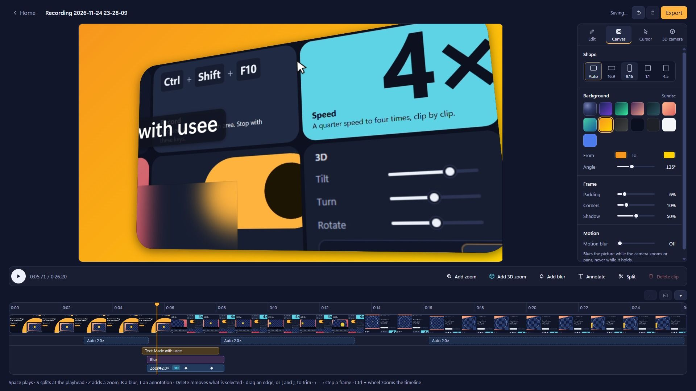
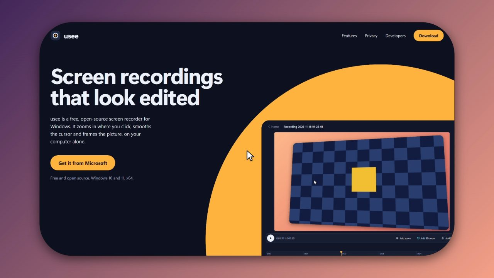
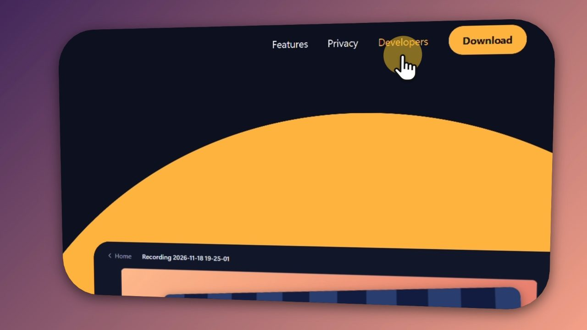
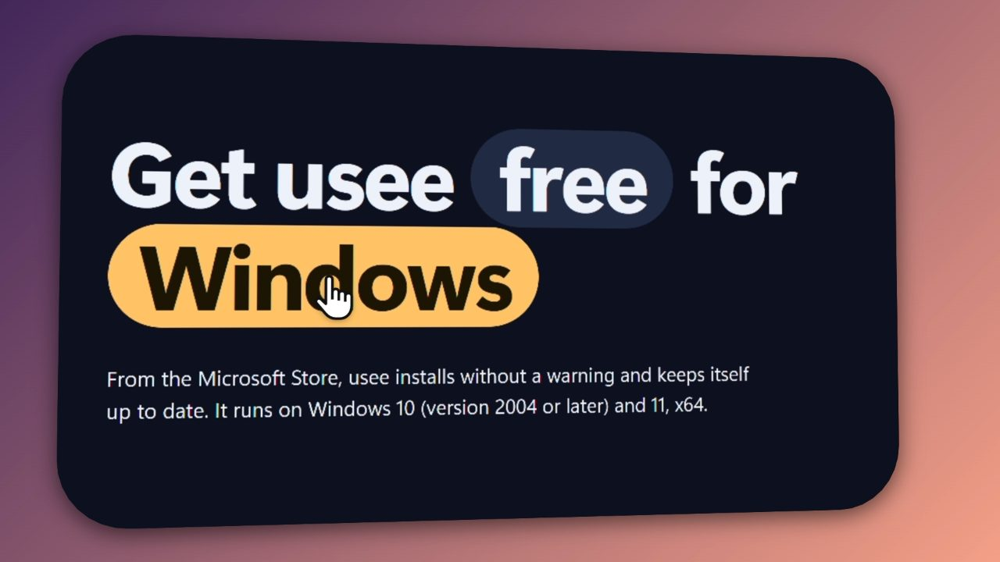
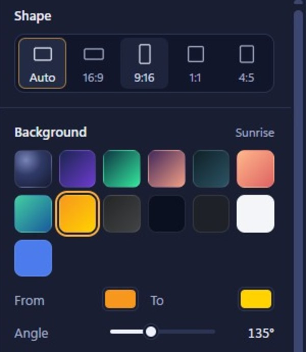
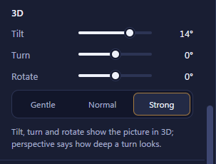
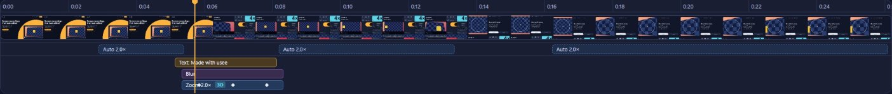
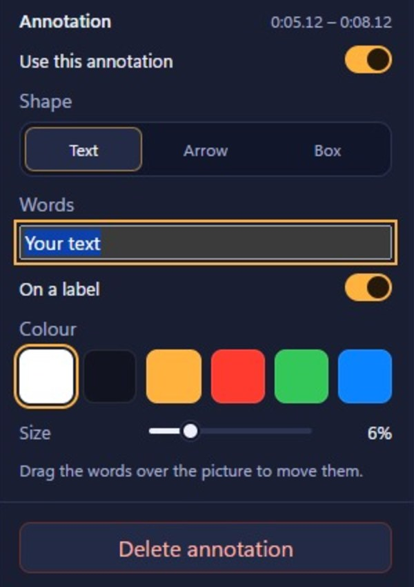
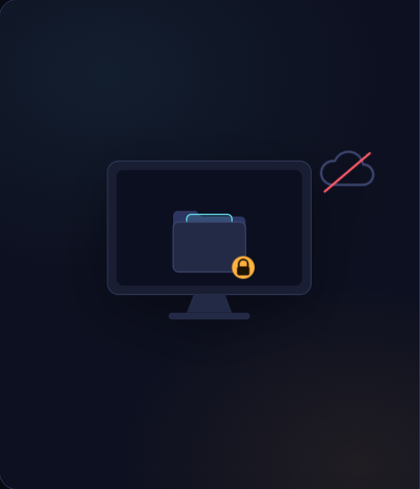

A trailer, made with usee
The Microsoft Store asked for a trailer, so we made one with usee: the screen recordings and clips in it are all usee's own. No other screen recorder was harmed.
usee is a free, open-source screen recorder for Windows. It zooms in where you click, smooths the cursor and turns the picture in 3D, all on your own computer.
No account, no watermark, no “your free trial has ended” email. For Windows 10 and 11.




usee notes each click and each pause of the pointer, then moves the camera there, flat or turned in 3D. Your viewers can finally read the 11-pixel text in your terminal.
These frames come from one usee export of this website, one redesign ago. Yes, it is recordings all the way down.
And nothing your finance team has to approve.
RecordA screen, a window or an area. One more shortcut to learn after Ctrl+C and Ctrl+V.
SpeedUp to 4× on the boring parts. npm install never looked so fast.
ExportMP4 up to 4K. This clip is a usee export, obviously.

CanvasBackgrounds, rounded corners, a shadow, and 9:16 for Shorts.

3D cameraTilt, turn, orbit. Your Excel tutorial, now cinematic.

TimelineSplit, trim and undo. Ctrl+Z works here, unlike in production.

CursorSmoothed, with a ring on each click. Nobody sees you wiggle it.

AnnotationsArrows for the button. Blur for the .env you never opened.
All three are the same app. Choose the one that sounds best in your standup.
| What you get | Hobby | Pro | Enterprise |
|---|---|---|---|
| Price | $0 | $0 | $0 |
| Auto zoom, 3D camera, cursor effects | All of them | All of them | All of them |
| Export | MP4 up to 4K | MP4 up to 4K | MP4 up to 4K |
| Watermark | None | None | None |
| Account to create | None | None | None |
| Telemetry | None | None | None |
| Source code | MIT licence | MIT licence | MIT licence |
| Support | GitHub issues | GitHub issues, read with a serious face | GitHub issues, and a quarterly review where we agree it is still free |
Also ₹0, €0 and £0. Tax on $0 is $0; we asked a calculator.

Recordings go to Videos\usee; settings and logs to your app-data folder. The logs hold no pictures, sound, window titles or keystrokes.
No account, no upload, no telemetry, no update checks. You pick the microphone for each recording, and usee forgets it.
It does not know you are here either: no cookies, no analytics, nothing loaded from other sites. Open the Network tab and check; we will wait.
The devlog: what changed, in words people use. The version for machines is the changelog.
Read the whole devlogThe Microsoft Store asked for a trailer, so we made one with usee: the screen recordings and clips in it are all usee's own. No other screen recorder was harmed.
It installs without a SmartScreen warning and keeps itself up to date. Certification took about a day; we refreshed Partner Center roughly four hundred times.
Electron 45, a Microsoft Store package, and a privacy policy that covers it. Releases also stopped calling themselves pre-releases. They grow up so fast.
A privacy policy, and a fix for a welcome tour that could close the next welcome tour. A race condition, naturally.
usee is built in phases. Each has a written plan and a check it must pass before the next one starts, and all of it is public in the repository's docs.
Each of these needs a written decision, with a privacy or licence review, before any code:
The details: the roadmap, the development phases and the architecture decisions.
Every line of code, every architecture decision and every CI run is public. The one thing kept private is a security report, until its fix ships.
git clone https://github.com/techuhat/usee.git
cd usee
npm install
npm run build:native # the C++ recorder: time for chai
npm run devThat is the whole onboarding. No wiki page last edited in 2019.
usee is an Electron and React app with a C++20 recorder host, which captures through Windows Graphics Capture and Media Foundation; FFmpeg encodes the export.
So far usee is one developer, a lot of tests and zero meetings. There is room.
Found a security hole? Please do not open an issue. Report it privately, and we will fix it and credit you.
Get usee free for Windows
From the Microsoft Store, usee installs without a warning and keeps itself up to date. It runs on Windows 10 (version 2004 or later) and 11, x64.
The installer from GitHub installs for your user alone, with no administrator rights. It is not signed yet, so SmartScreen asks once: choose More info, then Run anyway. To remove usee: Windows Settings, Apps, Installed apps, usee. Your recordings stay until you delete them.
The Microsoft Store signs the usee it distributes. The installer on GitHub is not signed yet; once it is, signing follows this policy.
Every signed file is built by GitHub Actions from this public source, and each release is approved by hand. Committers, reviewers and approvers: techuhat. Only usee's own files are signed; ffmpeg.exe, built from FFmpeg's source by the same workflow, is not.
This program will not transfer any information to other networked systems unless specifically requested by the user or the person installing or operating it.